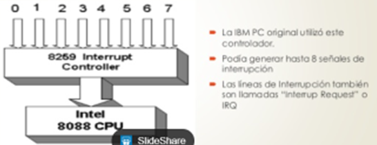
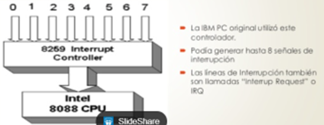

Interrupción, interrupción hardware o petición de interrupción es una señal recibida por el procesador de un ordenador, indicando que debe "interrumpir" el curso de ejecución actual y pasar a ejecutar código específico para tratar esta situación.
Una interrupción supone la ejecución temporaria de un programa, para pasar a ejecutar una "subrutina de servicio de interrupción", que pertenece al BIOS . Las interrupciones surgen de las necesidades que tienen los dispositivos periféricos de enviar información al procesador principal de un sistema de computación. La primera técnica que se empleó fue que el propio procesador se encargara de sondear el dispositivo cada cierto tiempo para averiguar si tenía pendiente alguna comunicación para él. Este método presentaba el inconveniente de ser muy ineficiente, ya que el procesador constantemente consumía tiempo en realizar todas las instrucciones de sondeo.
